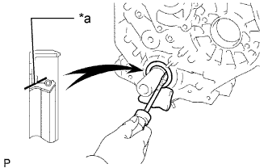

ПЕРЕДНИЙ САЛЬНИК КОЛЕНЧАТОГО ВАЛА > СНЯТИЕ |
| 1. REMOVE TIMING BELT |
Remove the timing belt (See page Нажмите здесь).
| 2. REMOVE CRANKSHAFT TIMING PULLEY |
 |
Using a screwdriver, remove the crankshaft timing pulley.
| 3. REMOVE FRONT CRANKSHAFT OIL SEAL |
|  |
Using a knife, cut off the lip of the oil seal.
| *a | Cut Position |
Using a screwdriver, pry out the oil seal.